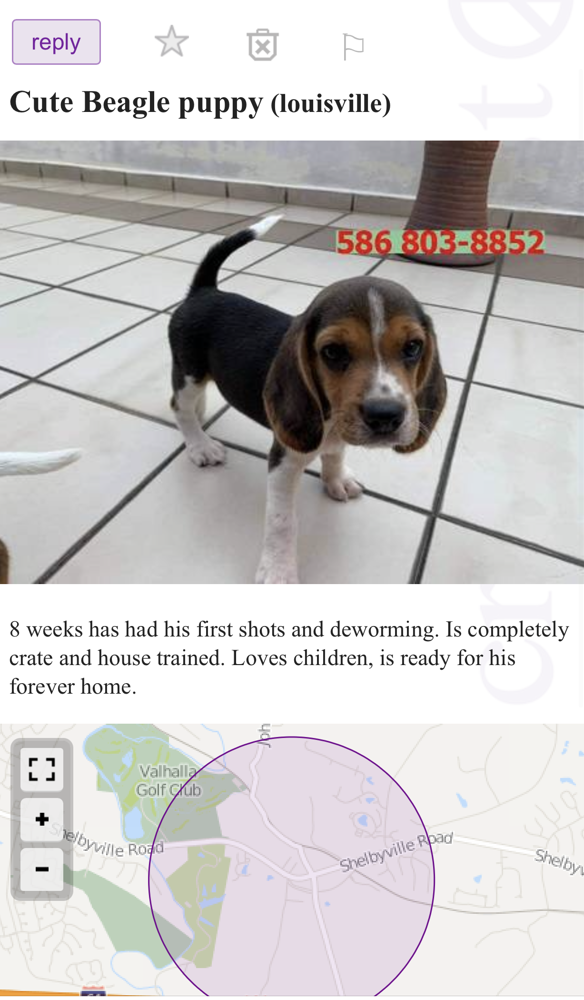
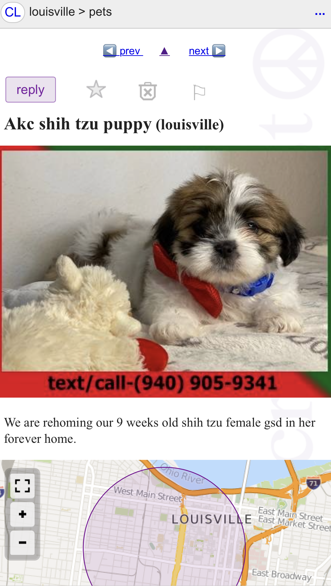

Return Home
Some tips on how to spot a scam.
-
The first thing I always noticed is the image. Usually the image
they use is a perfect looking puppy/dog. They will use stock images.
A way to check if a picture was taken from the internet is to do
a reverse image search.
-
Here is a good site to do a reverse image.
Google Reverse Image
-
Most of the time the scammers phone number has an area code that different from
the location they have posted their ad. If you don't recognize the area code,
then you definitely need to look up that area code. If it is email only, then it
would be after you have messaged them, and they typically reply back with a lengthy
and I mean lengthy email response, wanting you to tell them everything about you.
-
Scammers replying with a lengthy email response brings me to my next red flag
which is in that email they will probably have the excuse they have recently moved from
the location they posted their ad at, and will offer to ship the puppy to you. Seems
ridiculous to post an ad in a location you are no longer at doesn't.
-
While they so generously offer to ship your puppy, they
require you send a deposit. When it comes to deposits I generally think
they are bad idea, it is much better to do cash in hand meeting face to face.
Although not all scammers do the shipping excuse, sometimes they will say
they are in the location where they posted their ad, but it could be right
before you meet, they require a deposit, which is also ridiculous ask for
money when you are getting ready to meet them. In my opinion you should only
send a deposit if of course they are not a scam and if someone is holding the
dog/puppy for a week or more.
-
I would recommend that you either ask to facetime with them and the
puppy/dog or you could ask them for a picture or video with a peice
of paper with your first name and that day's date next to the puppy/dog.
There is also the unfortunate if it's too good to be true it usually is.
Here are two examples of scams I found off Craigslist:

